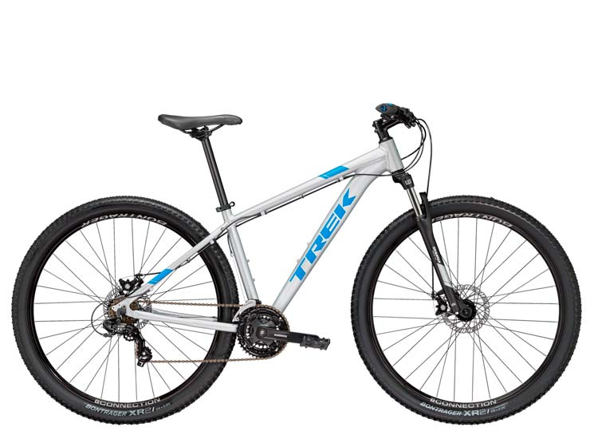
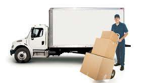

Hobbies
Mis hobbies favoritos son:
1. Cocinar
Me gusta alimentarme de manera sana y sin exceso de azúcar, paso tiempo viendo recetas en youtube para aprender.
2. Hacer Ejercicio
Me gusta salir a correr disfrutar del aire libre, la naturaleza e ir al gimnasio
3. Trabajar
Me gusta trabajar porque aprendo cosas nuevas cada día, además de que me ayuda a llevar una vida activa y sana.
